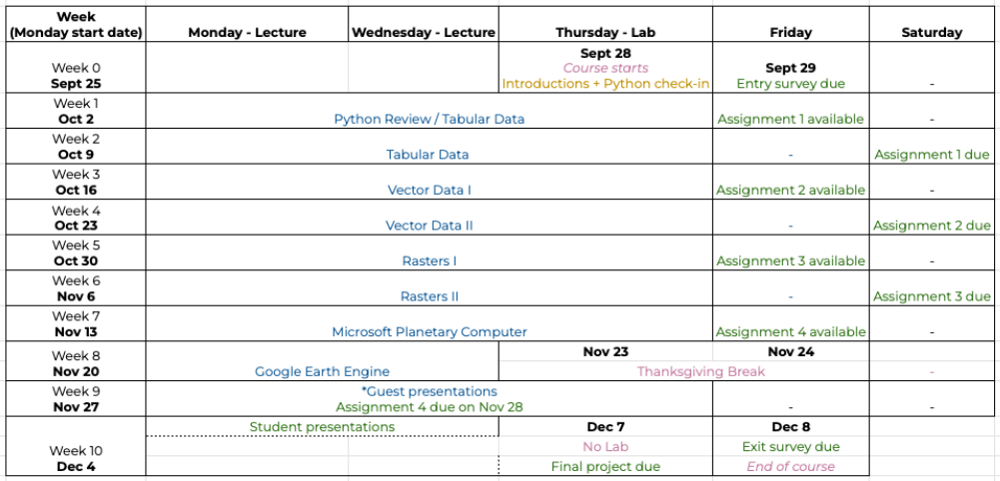

EDS 220 - Working with Environmental Datasets
Welcome!
Welcome to the course materials for EDS 220 - Working with Environmental Datasets! This course is part of the UCSB Masters in Environmental Data Science.
In this website you will find the materials covered during lectures and discussion sections for the Fall 2023 term. This site will be under construction throughout the course.
About
This hands-on course explores widely used environmental data formats and Python libraries for analyzing diverse environmental data. Students will gain experience working with popular open data repositories and cloud platforms to source and analyze real-world environmental datasets. The course will also serve as an introduction to Python programming and provide opportunities to practice effective communication of the strengths and weaknesses of students’ data products and analyses.
Instruction Team
Instructor
Carmen Galaz García (she/her/hers)
E-mail: galaz-garcia@nceas.ucsb.edu
Office hour: Wednesday 3:30-4:30 pm, NCEAS classroom
Best way to contact me: e-mail
TA
Yutian Fang (she/her/hers)
E-mail: yutianfang@bren.ucsb.edu
Office Hours: Tuesday, 4-5 pm, Decker’s deck (Bren school).
Best way to contact me: email
Syllabus
Calendar
The following is our ideal calendar, the course content and calendar may be subject to change as the course progresses.

About this website
This website is created with Quarto and is published through GitHub pages. Click here to go to the website’s GitHub repository.
Contribute
If you have suggestions on how to correct, improve, or expand these notes, please feel free to email galaz-garcia@nceas.ucsb.edu or file a GitHub issue.
License
All content in this book is licensed under the Creative Commons Attribution NonCommercial 4.0 International (CC BY-NC 4.0) license.